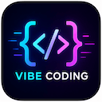

Vibe Coding チュートリアル

Vibe Coding（雰囲気プログラミング）は、まったく新しいソフトウェア開発手法です。
Vibe Coding はゼロからコードを書くのではなく、自然言語で要件を記述し、AI にコードの生成、修正、デバッグ、リファクタリングを任せます。
Vibe Coding はプログラミングができなくても開発できるというものではなく、コードを書くを次のようにアップグレードする設計 + 指揮 + 検証。
将来の開発者の中核競争力は、コード能力から、問題分解能力、システム設計能力、AI 協働能力へとますますシフトしていくでしょう。
Vibe Coding の役割分担
Vibe Coding モードでは、開発者の役割は根本的に変わります。
| 開発者は担当する | AI は担当する |
|---|---|
| プロダクト要件の提案 | ビジネスコードの作成 |
| 技術方式の決定 | コードの反復修正 |
| 実行結果の受け入れ確認 | 技術ドキュメントの参照 |
| プロジェクト全体の方向性の管理 | テストケースの自動生成 |
| 問題の重大性の評価 | エラーを分析し解決策を提示 |
典型的なワークフロー
従来開発 vs Vibe Coding
| 従来開発 | Vibe Coding |
|---|---|
| 機能を考える → ドキュメントを調べる → コードを書く → デバッグ | 機能を考える → AI に伝える → 調整を繰り返す → 完成 |
よく使うツール
| ツール名 | ツールの種類 | 主な特徴と適用シーン |
|---|---|---|
| 秒哒 | コード不要/自然言語 | 文字を入力するだけでアプリを生成。口述だけで生成でき、Vibe Coding を素早く体験する入門に最適。 |
| MoneyCode | AI がオンラインでコーディングタスクを実行 | オンラインアプリ。文字を直接入力し、プラットフォーム上でタスクを作成して AI にコーディングさせます。クラウド開発環境でターミナル、ファイル管理、プレビューが使えます。 |
| Cursor | AI ネイティブエディタ | 複数ファイルの全自動チューニングが可能で、現在最もエコシステムが成熟した雰囲気プログラミングの本命。 |
| Trae | AI ネイティブエディタ | ByteDance 製の AI エディタ |
| Qoder | AI ネイティブエディタ | Alibaba 製の AI プログラミングツール IDE |
| Claude Code | ターミナルコマンドライン | CLI 対話型で、論理的推論に非常に優れ、ギーク向けのクロスファイルリファクタリング利器。 |
| Windsurf | AI ネイティブエディタ | 強力なエージェントがコンテキストを自律的に把握し、自主修復します。 |
| Continue | オープンソース IDE プラグイン | 自由度が非常に高く、ローカル専有モデルをサポート。オープンソースの代替として第一候補。 |
| Copilot | 定番 IDE プラグイン | スマートコード補完（Tab キー）。半自動のコード微調整に最適。 |
| ChatGPT | 汎用対話 AI | 初期のアーキテクチャのブレインストーミング、ロジック設計、単一コードのデバッグに最適。 |
| Codex | OpenAI がリリースしたエージェント（AI Agent） | コードを自律的に理解、記述、デバッグ、レビューでき、複数の開発タスクを並行処理できます。 |
| OpenCode | ターミナルコマンドライン | オープンソースの透明性とコミュニティ共創を重視し、カスタマイズ探索に最適。 |
誰が読むべきか
-
プログラミング初心者：開発分野に入りたい人、素早く作品を作りたい人、学習ハードルを下げたい人。
-
メリット：成果を早く実感でき、学習のフィードバック速度が向上する。
-
個人開発者：サイドプロジェクト、SaaS 製品、自動化ツール、AI 製品の検証。
-
フロントエンド/バックエンドエンジニア：日常開発、コードリファクタリング、テスト生成、ドキュメント生成。
-
プロダクトマネージャー / 運用担当者：プロトタイプ検証、自動化スクリプト、社内ツール開発。
注意：基礎知識の学習を飛ばさないこと。Vibe Coding は加速器であって、代替品ではありません。
どんな基礎能力が必要か
多くの人は Vibe Coding = プログラミング不要と誤解していますが、実際はそうではありません。
最低限、以下の基礎能力を身につけることをお勧めします：
基礎能力
コードを読める：少なくとも理解できる
if、for、function、class、APIこれらの基本概念。目標は AI がでたらめを書いていないか判断できることです。これが安全の最低ラインです。
-
プロジェクトを実行できる：インストール、起動、エラー、修正、デプロイまでの一連の流れを理解している。
Node.js、Python、Git のいずれかの技術スタックを最低限習得している。
問題を検索できる：エラーメッセージの見方、ドキュメントの調べ方、解決策の検証方法を知っている。
これは自立して問題を解決するための基礎能力です。
その他の能力
1. プロダクト分解能力
大きな要件を小さなタスクに分解できる。曖昧で膨大な要件を AI に丸投げしないこと。
| 誤ったやり方 | 正しいやり方 |
|---|---|
| 淘宝（タオバオ）を作って | ログイン → 商品一覧 → カート → 支払い（一つずつ分解） |
2. プロンプト能力
目標、制約、入力、出力、受け入れ基準を含む明確な要件記述が書ける。
用 Vue3 开发 使用 Tailwind CSS 移动端优先 不要第三方组件库
3. システム思考
フロントエンド、バックエンド、データベース、デプロイの関係を理解している。
そうでないと、実行はできそうに見えて本番では壊れる、実用化できないシステムを生成しやすくなります。
Vibe Coding の特徴
Vibe Coding の中心的な特徴を理解すると、その強みを活かし、弱みを回避するのに役立ちます。
高速
以前は 1 日かかっていたプロトタイプが、今は 30 分でできるかもしれません。
効率向上の核心は、反復的なコーディング作業を AI に任せることにあります。
対話駆動
従来のコードを書くモードではなく、継続的なコミュニケーションと反復による協業モードです。
強力な反復
典型的なプロセスは、生成 → 実行 → エラー → 修正 → 最適化 を絶えず繰り返すことです。
毎回の反復で目標に近づいていき、一発で完成させるわけではありません。
上限が高く、下限も低い
熟練者が使えば効率は 5 倍になりますが、初心者が使うと大量の技術負債を生む可能性があります。
鍵となるのは、AI の成果物の品質を判断できるかどうかです。
プログラマーというより、むしろディレクター
従来開発は自分で映画を撮るようなものですが、Vibe Coding はチームを指揮して映画を撮るようなものです。
あなたの中核能力は「コードを書く」ことから「意思決定」へと移ります。
推奨学習パス
ゼロから AI 開発を熟達するまでの段階的な学習ロードマップです。
ステップ1：基礎を学ぶ
まず HTML、CSS、JavaScript、Python、Git を習得することをお勧めします。
ステップ2：AI開発を始める
いずれかのツールを選んで使い始めましょう：Cursor、Claude Code、ChatGPT、Codex。
目標：Todo アプリ、ブログ、管理画面などの小規模プロジェクトを完成させる。
ステップ3：エンジニアリング能力を学ぶ
API、データベース、デプロイ、テストなどのエンジニアリングスキルを引き続き学びます。
これは「動く」から「本番稼働できる」への重要な一歩です。
ステップ4：エージェント開発に入る
Skills、Workflow、Agent、RAGなどの高度な概念を学びます。
これはVibe Codingの上級段階です——AIにコードを書かせるだけでなく、自律的にタスクを完了させます。
その他の拡張
クリックしてノートを共有
<p style="font-size:14px;">ノートはこの記事の内容の拡張である必要があります！</p><br> <p style="font-size:12px;"><a href="../tougao.html" target="_blank">記事投稿はこちらをクリック</a></p> <p style="font-size:14px;"><a href="../w3cnote/runoob-user-test-intro.html" target="_blank">登録招待コードの取得方法</a></p> <h3 class="text-muted"><i class="fa fa-info-circle" aria-hidden="true"></i> ノートを共有する前に<a href=";.html" class="runoob-pop">ログイン</a>が必要です！</h3> <p><a href="../w3cnote/runoob-user-test-intro.html" target="_blank">登録招待コードの取得方法</a></p>